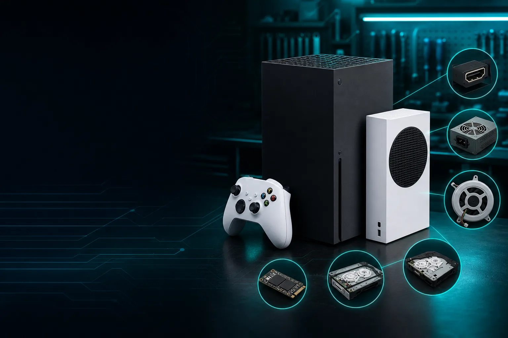

Game Console Repairs
Microsoft Xbox Repairs Brisbane

Book professional Microsoft Xbox repairs in Brisbane for HDMI port faults, no signal, black screen, disc drive issues, power problems, hard drive or SSD faults, loud fan noise and overheating.
Xbox repair services available at TECHM8
- Xbox HDMI port repair, no signal, black screen, flickering image and loose HDMI connection checks.
- Xbox power and startup diagnosis, no power, random shutdown and power cycling checks.
- Xbox fan, overheating, dust buildup and cooling maintenance.
- Xbox disc drive repair, stuck disc removal, disc read errors and eject faults.
- Xbox hard drive, SSD, storage corruption, slow loading and boot loop checks.
- USB port faults, controller faults, Wi-Fi symptoms, software errors and general diagnostics.